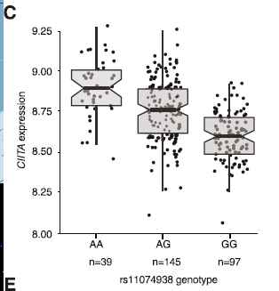
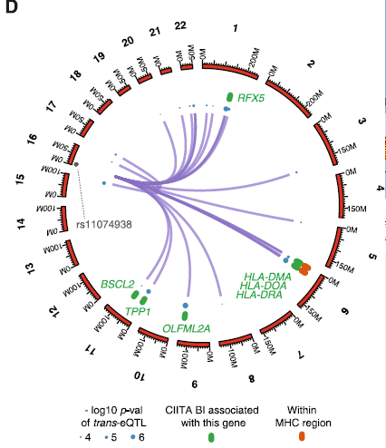
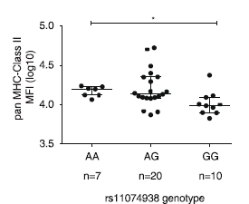

SNPs, ChIPs and RNA
Attempts to understand complex phenotypes
Peter Humburg
15th April 2015
Overview
Changes to gene expression
- eQTL analysis in B cells shows reduced expression of CIITA associated with G allele
- Evidence for changes in expression of CIITA target genes
- Reduced presence of MHC class II proteins on cell surface associated with G allele



Acknowledgments
Breast cancer risk and variant annotation
| Peter Donnelly | Nazneen Rahman | ||
| Manuel A. Rivas | Katie Snape | ||
| Andrew Rimmer | Elise Ruark | ||
 |
Davis McCarthy |